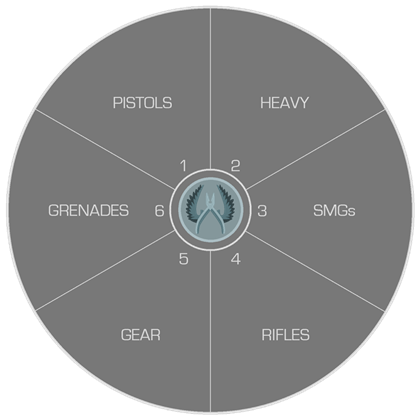

Les armes sur CS:GO
Sur CS:GO il y a pleins d'armes de différentes sortes. Il y a les pistolets , les armes lourdes , les fusils, etc...
Avant d'en apprendre plus sur les armes il faut savoir que les terroristes et les anti-terroristes n'ont pas exactement toutes les mêmes armes.
Elles ont toutes une cadence de tir et un spray. Nous allons toutes les voir en plusieurs parties.
I. Les pistolets
Les pistolets sont les armes de la première manche , on en a toujours un sur nous. Les deux pistolets princpaux sont le glock-18 ( terroristes ) et le USP-S ( anti-terroristes )
Voici le spray du glock-18

Et celui de l'USP-S

Encore une fois le spray est un peu près le même, mais contrairement aux fusils d'assauts tous les pistolets n'ont pas le même spray
Par exemple pour le desert-eagle

II. Les fusils
Les fusils sont les armes les plus jouées. Les plus connues sont les AK-47 , AWP , FAMAS , M4-A4/M4-A1S. Quand on tire avec des fusils les balles ne vont pas tout droit, les balles se dispersent, c'est ce qu'on appelle le spray.
Commencons par l'AK47, les points sous l'image ci-dessous représentent la dispersion des balles.

Ducoup il faut savoir gérer la dispersion des balles en descendant son viseur pour que les balles aillent tout droit.
Pour les autres fusils ( excepté les snipers ) c'est un peu près pareil
Prenons la M4A4.

III. Les pistolets mitrailleur
Les mitrailleurs sont pratiques pour rush ses adversaires , c'est plus dur de les jouer de loin. Il tire assez rapidement et leurs spray se ressemble.
Par exemple pour le UMP-45 qui est un des meilleurs

Un autre exemple , le MAC-10 , il tire très vite. Il est donc très pratique pour rush ses adversaires.

IV. Les armes lourdes
Les armes lourdes sont les pompes et les bateuses
Les pompes mettent beaucoup de dégâts de près. Ils n'ont pas vraiment de spray car ils tirent balles par balles.
Parcontre pour la NEGEV et la M249 , ce sont deux grosses bateuses qui ont beaucoup de munitions et tirent très vite.